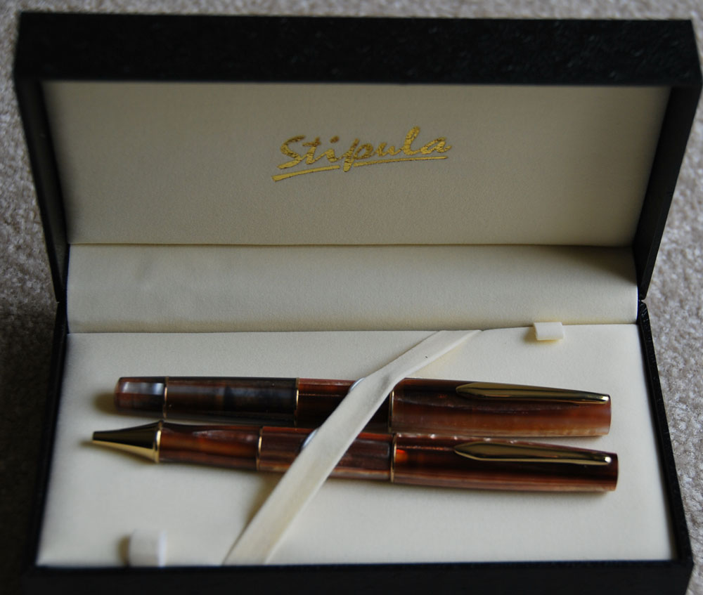
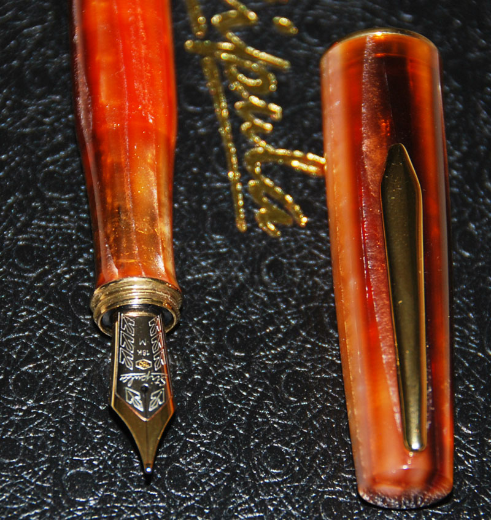
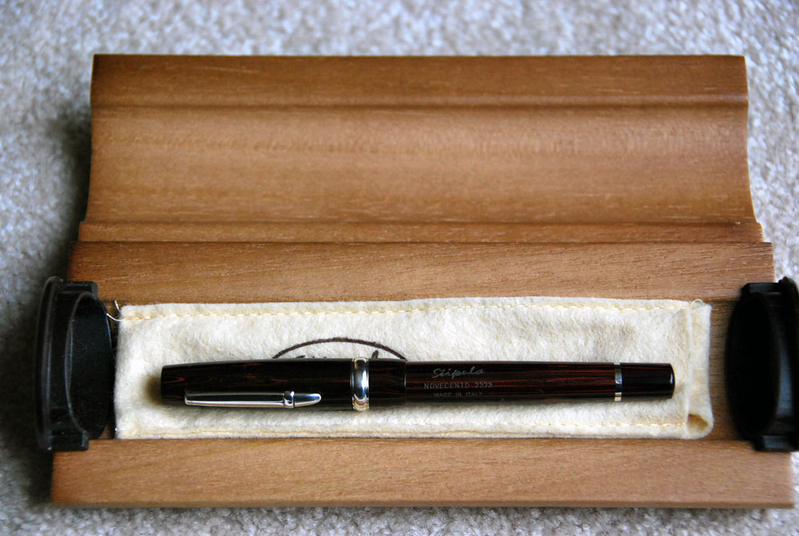
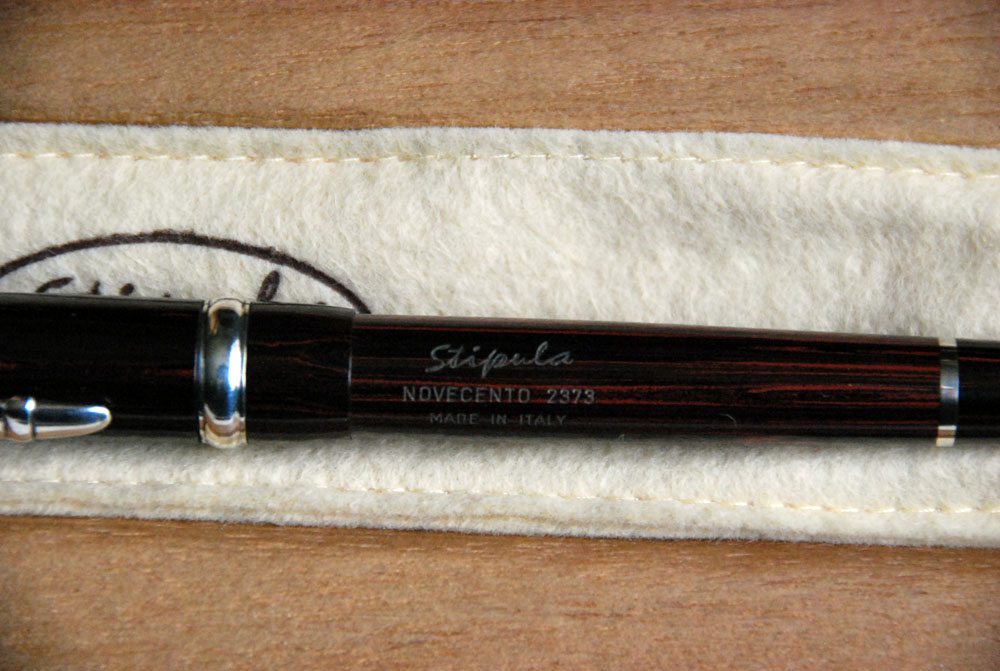
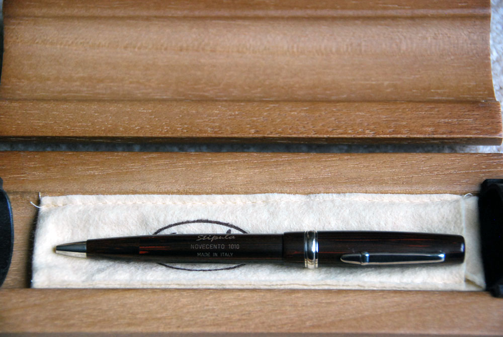

Stipula Baracca (SOLD)
This was designed by Boattini for Stipula. It commemorated Francesco Baracca who was a World War One flying ace who died in battle. It was produced in 1988 for the 100th anniversary of his death. Only 888 pieces were produced and this one is number 433. It comes with a single tone 18kt medium nib. It is about 5.3 inches capped and 6.5 inches with cap posted. Without the cap, it measures about 4.8 inches. The body is black ebonite and the accents are .925 sterling silver. It comes with a sleeve filling mechanism, but the package also includes a converter and a cartridge holder that you can exchange. The cap has a recessed image of a griffin and a horse (similar to the Ferrari logo) on either side. The body contains Baracca's signature and the serial number of the pen.
The pen comes in a tube-shaped box draped with the Italian flag. Inside the tube is a cloth wrap (olive color) the lower edge of which has Italian tri-color strip. At the top side it has a dog tag (metal plate) with more information. Also included is documentation about the pen and Francesco Baracca.
These pens are long gone and are very hard to find. The pen has never been used or dipped.
Price: SOLD.


Stipula Duetto
In cognac color with gold accents. The fountain pen comes with an 18kt medium nib. It is about 5.5 inches capped and 6.5 inches with cap posted. I also have the ball point and I would like to sell these as a set, although I will entertain offers for individual pieces. The ball point is about 5.75 inches and takes Parker-style refills. These are never used and come with all the boxes (including the outer sleeve). Instead of me trying to describe them to you, let me point to a review that is much more complete than what I can provide:
http://fountainpenreview.blogspot.ca/2005/10/stipula-duetto-review.html
The cognac color pen in the second review is the one I am selling.
Price: FP: $250 (SOLD); BP:$125.


Stipula Novacento
In ebonite with .925 sterling silver accents. The fountain pen comes with an 18kt medium nib. This is the medium size fountain pen that is about 5.25 inches capped and about 6 inches with cap posted. It is 4.75 without the cap. I am selling this with the ballpoint as a set. The ballpoint is about 5.75 inches and takes Parker-style refills. The fountain pen is numbered 2373 and the ballpoint is numbered 1010 (the numbers are visible in the pictures). The fountain pen is cartridge/converter fill.
Here is a review that says much more, but it describes the larger size pen that is about 0.25 inches longer when capped and has a piston filling mechanism:
http://fountainpenreview.blogspot.ca/2005/10/stipula-novecento-review.html
Price: $450



